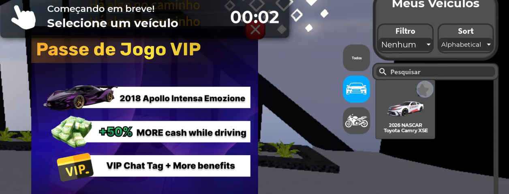
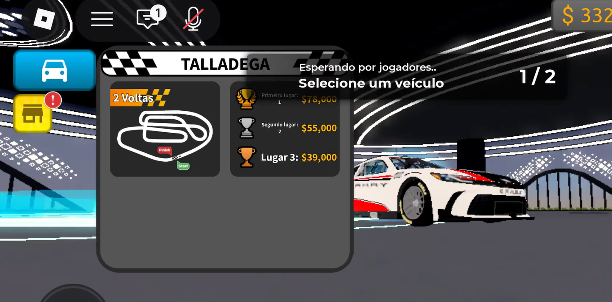

- Vehicle spawn & selection
- Race matchmaking (Solo mode)
- Track loading / streaming
- Driving physics & HUD (speed, gear, boost)
- In-game store & monetization (VIP Game Pass)
- Vehicle garage management
- Exploratory Testing
- Functional Testing
- Behaviour Observation
- Reproduction Attempts (in progress)
Session recorded on a mobile device using touch controls, on a live multiplayer server.
Assess core vehicle and racing systems through hands-on exploratory testing, focusing on race entry flow, track-load behaviour, HUD accuracy, and monetization UI timing during active gameplay.
The session covered the full core loop: vehicle spawn → mode selection → matchmaking → race → results → store → garage → hub return. Currency updates, chat activity, gear indicator behaviour, shop rendering, and race HUD (position / lap / % complete) all behaved consistently throughout. One unconfirmed observation was recorded during a Talladega race attempt — documented below as a Potential Issue, not a confirmed bug.
✅ CONFIRMED ISSUES
No confirmed defects at this stage. The items below require additional reproduction attempts before being classified as confirmed bugs.
🔍 POTENTIAL ISSUES / OBSERVATIONS
OBS-001 — Vehicle frozen mid-air with unstable speed telemetry
Steps to Reproduce:
- Join a multiplayer race on the Talladega track.
- Wait through the pre-race loading / countdown sequence.
- Observe the vehicle and the speed readout in the first few seconds after the race is meant to start, without pressing any driving inputs.
Expected Result: Vehicle spawns on the track surface and responds normally once the race begins.
Actual Result: Vehicle appeared frozen/glitched mid-air with no track surface visible beneath it. The speed readout showed wildly inconsistent values across multiple observations — including 117,575 km/h, 120,146 km/h, and 124,654 km/h — while the gear indicator stayed locked on 6th, with no player input given during the window (camera movement only, no acceleration or braking). The race did not progress; the session returned to the main lobby shortly after.
Severity / Priority: Not yet assigned — pending reproduction under controlled conditions.
Status: Unconfirmed · Reproducibility: 1/1 observed
OBS-002 — Possible checkpoint skip with combined boost + drift input
Description: Vehicle appeared to skip a checkpoint when boost and drift inputs were combined near a bridge section.
Status: Not reproduced or confirmed — needs further reproduction attempts before being logged as a confirmed bug.
OBS-003 — VIP Game Pass popup timing
Description: The VIP Game Pass upsell popup appeared over vehicle selection while a pre-race countdown was actively running behind it.
Status: Not confirmed to block input — worth verifying the popup doesn't cause a missed race start.




Screenshots reference the exact filenames uploaded to assets/driving-empire/.
Full session recording (external link — not embedded):
▶ Watch Full Session on YouTube